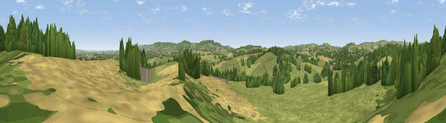

Viewpoint near Langford Budville
#22155 in England · top 46% of its area beats it · near Langford BudvilleWhere it is
The exact computed spot (ST 10675 22225). Click the marker for map links.
The view, rendered

A 360° render of this exact spot computed from the terrain model, tree cover and land cover — summer colours, afternoon light, calibrated against photographs of famous viewpoints. Real trees, hedges and buildings will differ in detail.
The panorama
Grey silhouette: terrain skyline in each direction (720 bearings, Earth curvature and refraction included). Dashed green: skyline with trees (+15 m) and buildings (+8 m) as obstacles. Blue strip: how far the ground is visible on each bearing.
Where the view opens
Wedge length = distance to the farthest visible ground on that bearing (vegetation-aware). Rings at 10, 25 and 50 km.
What fills the view
54% grassland · 22% woodland · 22% cropland · 1% built-up
Angular shares of the visible panorama (visual magnitude), not map area. Landscape diversity 0.46 (0–1 Shannon).
Key numbers
More beautiful places nearby
The staircase of upgrades: each row has a higher view potential than everything closer. Driving times are estimates from straight-line distance, calibrated against real road routing — check an actual route before setting out.
| Place | Direction | Drive | Score |
|---|---|---|---|
| Viewpoint near Langford Budville | N · 1 km | ~3 min | 52.9 |
| Viewpoint near Holywell Lake | SW · 3 km | ~7 min | 55.4 |
| Viewpoint near Milverton | N · 4 km | ~9 min | 65.1 |
| Viewpoint near Sampford Arundel | SSE · 5 km | ~12 min | 72.3 |
| Viewpoint near Wiveliscombe | NW · 5 km | ~12 min | 75.1 |
| Viewpoint near Pitminster | ESE · 10 km | ~20 min | 77.3 |
| Viewpoint near Broomfield | NE · 13 km | ~24 min | 78.5 |
| Cothelstone Hill | NE · 13 km | ~24 min | 82.1 |
50.99247, -3.27414 · source: screening · position refined by local search. Computed location — check access rights before visiting.